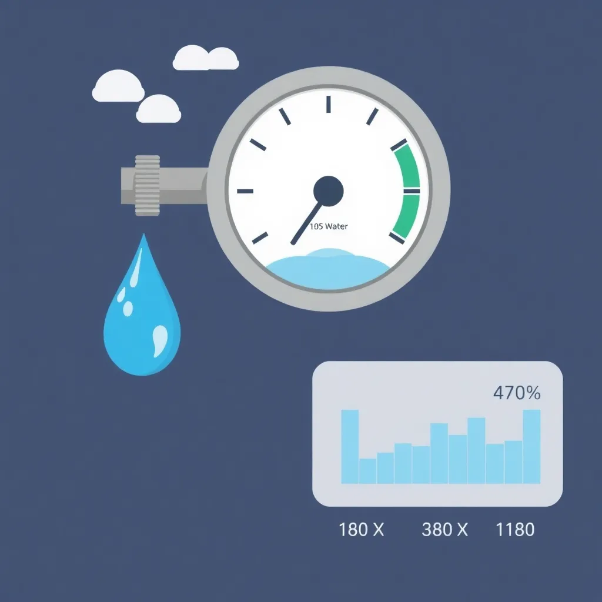
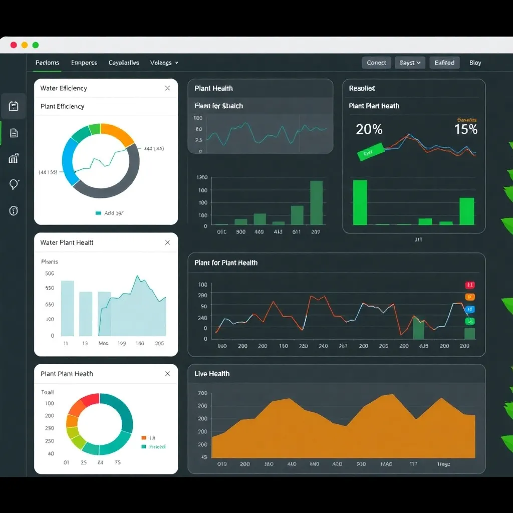

Full-Scope Garden Consultancy Pruning, Layout & Water Management
Harness the power of data and insight for beautiful, sustainable, and thriving gardens with BotaniScope’s expert services.
Our consultancy is dedicated to supporting gardeners of all levels—from home gardeners to professional landscapers—by offering comprehensive analytics-driven plans and insights that truly revolutionize traditional gardening approaches.
Our Services with Analytical Precision
At BotaniScope, we combine scientific rigor and horticultural expertise to cover all aspects of garden management. Whether you are looking to refine pruning techniques, rethink your garden layout, or optimize your water usage, our services provide the insights and plans needed for success.
Pruning Consultancy
Precision Pruning
Custom pruning plans to promote health, growth, and aesthetics using data-driven pruning schedules and diagnostics.
Our consultants evaluate the specific species, growth patterns, and seasonal conditions of your plants to recommend pruning methods and timing that maintain plant vigour and beauty while preventing disease and damage.
Garden Layout & Design
Optimized Garden Layout
Strategic layout consultations to maximize space, plant health, and water efficiency through advanced analytics.
By analyzing soil quality, sunlight exposure, and water flow, we design adaptive garden layouts that nurture desired plants in ideal conditions and reduce maintenance requirements.
Water Management Solutions
Smart Water Management
Implement eco-friendly watering systems based on soil moisture analytics and seasonal patterns to conserve resources.
Our solutions use sensors and predictive models to schedule watering that aligns with weather, plant needs, and soil moisture levels, ensuring no water is wasted and plants receive optimal hydration.
Analytics Dashboard & Interactive Diagnostics
Explore our rich analytics platform that enables hands-on management of your garden health. Providing multiple views into plant pruning status, growth performance, and water consumption patterns, the diagnostics dashboard is designed to turn complex data into clear, actionable insights.
Pruning Health Overview
This chart tracks key indicators such as branch density, leaf vitality, and disease presence post-pruning events, helping assess whether pruning practices are reinforcing plant resilience.
Plant Growth Rate
Monitor your plants’ growth trends, observe seasonal cycles and spot improvements or declines early through this detailed growth rate graph.
Water Usage Efficiency

This chart displays your garden’s water consumption patterns compared against plant hydration needs and weather data for optimized water saving recommendations.
Our cutting-edge analytics dashboard provides real-time, interactive garden diagnostics that help you monitor plant health, growth trends, and water consumption with precision. Using advanced sensors and data aggregation, you can visualize the impact of your gardening strategies on an intuitive interface.
Designed for clarity and actionability, the dashboard integrates live data streams with historical insights, enabling predictive adjustments for pruning schedules, layout optimization, and irrigation plans. Empower your garden care through accessible visualizations and actionable reports tailored to your specific environment.

Interactive Garden Analytics Dashboard with water usage and growth charts
About BotaniScope
BotaniScope is a leading garden consultancy that blends botanical expertise with analytics technology to craft sustainable, thriving outdoor environments. Our team combines decades of horticultural experience with state-of-the-art data analysis tools to deliver tailored pruning plans, optimized garden layouts, and smart water management strategies. We empower gardeners and property owners to make informed decisions that foster growth, conserve resources, and beautify spaces.
Our passion for plants and technology drives us to continually innovate and integrate new methodologies. We ensure our clients receive not just plans, but ongoing support through data insights, education, and personalized consultation tailored to each garden's unique ecosystem.
With BotaniScope, expect professional service rooted in scientific understanding coupled with a genuine love for green landscapes, fostering community and environmental health.
Our expert consultancy team at work
Customer Feedback
Your experiences matter deeply to us. By sharing how BotaniScope has impacted your garden or suggestions for our services, you help us grow and improve. We actively listen and incorporate client insights to refine our methodologies and tools.
Expert Gardening Tips
Maximize Plant Health
Regularly inspect plants for pests or diseases to maintain garden health. Early detection leads to healthier ecosystems and reduced pesticide use.
Prune during early morning or late evening to prevent plant stress and reduce water loss, allowing for faster recovery and growth.
Use mulching to preserve soil moisture and reduce weed growth, helping maintain stable root environments and soil temperature.
Water Wisely
Choose drip irrigation for efficient watering with minimal evaporation, directing water to plants’ roots effectively.
Water deep and less frequently to encourage strong root development and resilience during dry periods.
Group plants by water and sunlight needs for easy maintenance and health, reducing stress on plants and improving longevity.
Ensure adequate spacing to promote airflow and reduce disease risk, creating an open environment for healthy growth.
Incorporate pathways with permeable surfaces to avoid runoff and compaction, supporting soil integrity and water absorption.
Disclaimer: BotaniScope offers consultancy services based on best practices and available analytics. Results may vary due to environmental factors beyond control. Always consult with certified local professionals before conducting major garden modifications or treatments.
All recommendations are made in good faith based on gathered data and research, but BotaniScope disclaims liability for any damages or losses related to consultancy advice, implementations, or unauthorized use of provided material.